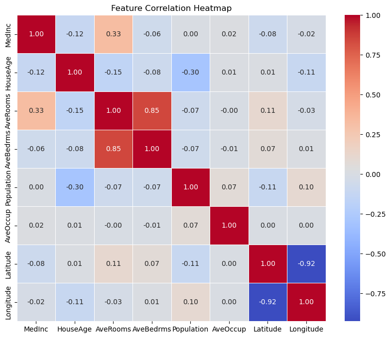
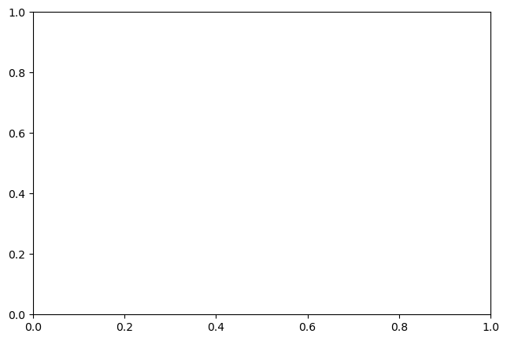

explainer = shap.TreeExplainer(model)shap_values = explainer.shap_values(X_train)# Summary Plotshap.summary_plot(shap_values[1], X_train, feature_names=X_train.columns)# Dependence Plot for 'Fare'if'Fare'in X_train.columns: shap.dependence_plot('Fare', shap_values[1], X_train, feature_names=X_train.columns)else:print("Feature 'Fare' is not in the dataset.")
---------------------------------------------------------------------------AssertionError Traceback (most recent call last)
Cell In[2], line 5 2 shap_values = explainer.shap_values(X_train)
4# Summary Plot----> 5shap.summary_plot(shap_values[1],X_train,feature_names=X_train.columns) 7# Dependence Plot for 'Fare' 8if'Fare'in X_train.columns:
File ~/miniforge3/envs/573/lib/python3.12/site-packages/shap/plots/_beeswarm.py:543, in summary_legacy(shap_values, features, feature_names, max_display, plot_type, color, axis_color, title, alpha, show, sort, color_bar, plot_size, layered_violin_max_num_bins, class_names, class_inds, color_bar_label, cmap, show_values_in_legend, use_log_scale) 540assertFalse, shape_msg +" Perhaps the extra column in the shap_values matrix is the " \
541"constant offset? Of so just pass shap_values[:,:-1]." 542else:
--> 543assert num_features == features.shape[1], shape_msg
545if feature_names isNone:
546 feature_names = np.array([labels['FEATURE'] %str(i) for i inrange(num_features)])
AssertionError: The shape of the shap_values matrix does not match the shape of the provided data matrix.
import pandas as pdfrom sklearn.model_selection import train_test_splitfrom sklearn.ensemble import RandomForestClassifierfrom sklearn.preprocessing import OneHotEncoder, StandardScalerfrom sklearn.compose import ColumnTransformerfrom sklearn.pipeline import Pipelineimport shapimport matplotlib.pyplot as plt# Load Titanic dataseturl ="https://raw.githubusercontent.com/datasciencedojo/datasets/master/titanic.csv"titanic = pd.read_csv(url)# Preprocessingfeatures = ['Pclass', 'Age', 'SibSp', 'Parch', 'Fare', 'Sex', 'Embarked']target ='Survived'titanic = titanic.dropna(subset=['Age', 'Embarked'])X = titanic[features]y = titanic[target]# Preprocessor: handle numeric and categorical featuresnumeric_features = ['Age', 'Fare', 'Parch', 'SibSp']categorical_features = ['Pclass', 'Sex', 'Embarked']preprocessor = ColumnTransformer( transformers=[ ('num', StandardScaler(), numeric_features), ('cat', OneHotEncoder(), categorical_features) ])# Create pipeline with Random Forestmodel_pipeline = Pipeline(steps=[ ('preprocessor', preprocessor), ('classifier', RandomForestClassifier(random_state=42))])# Train-test splitX_train, X_test, y_train, y_test = train_test_split(X, y, test_size=0.2, random_state=42)# Train the modelmodel_pipeline.fit(X_train, y_train)# Transform the test data for SHAP explanationX_test_enc = pd.DataFrame( data=preprocessor.transform(X_test), columns=(numeric_features +list(preprocessor.named_transformers_['cat'].get_feature_names_out())), index=X_test.index)# Compute SHAP valuesexplainer = shap.TreeExplainer(model_pipeline.named_steps['classifier'])shap_values = explainer.shap_values(X_test_enc)# SHAP summary plot for the positive class (class 1)shap.summary_plot(shap_values[1], X_test_enc)# SHAP dependence plot for 'Fare'shap.dependence_plot('Fare', shap_values[1], X_test_enc)# Choose a specific example for a waterfall plotexample_index =10# Example index for explanationshap.initjs() # Load JS for visualizationshap.plots.waterfall( shap.Explanation( values=shap_values[1][example_index], base_values=explainer.expected_value[1], data=X_test_enc.iloc[example_index].values, feature_names=X_test_enc.columns ))
---------------------------------------------------------------------------AssertionError Traceback (most recent call last)
Cell In[4], line 56 53 shap_values = explainer.shap_values(X_test_enc)
55# SHAP summary plot for the positive class (class 1)---> 56shap.summary_plot(shap_values[1],X_test_enc) 58# SHAP dependence plot for 'Fare' 59 shap.dependence_plot('Fare', shap_values[1], X_test_enc)
File ~/miniforge3/envs/573/lib/python3.12/site-packages/shap/plots/_beeswarm.py:543, in summary_legacy(shap_values, features, feature_names, max_display, plot_type, color, axis_color, title, alpha, show, sort, color_bar, plot_size, layered_violin_max_num_bins, class_names, class_inds, color_bar_label, cmap, show_values_in_legend, use_log_scale) 540assertFalse, shape_msg +" Perhaps the extra column in the shap_values matrix is the " \
541"constant offset? Of so just pass shap_values[:,:-1]." 542else:
--> 543assert num_features == features.shape[1], shape_msg
545if feature_names isNone:
546 feature_names = np.array([labels['FEATURE'] %str(i) for i inrange(num_features)])
AssertionError: The shape of the shap_values matrix does not match the shape of the provided data matrix.
from sklearn.datasets import fetch_california_housingimport pandas as pd# Load the California Housing datasetdata = fetch_california_housing(as_frame=True)df = data.framefeatures = data.feature_namestarget ="MedHouseVal"print(df.head())
from sklearn.model_selection import train_test_split# Split the dataset into training and testing setsX = df[features]y = df[target]X_train, X_test, y_train, y_test = train_test_split(X, y, test_size=0.2, random_state=42)
import seaborn as snsimport matplotlib.pyplot as plt# Compute the correlation matrixcorr_matrix = X.corr()# Plot the heatmapplt.figure(figsize=(10, 8))sns.heatmap(corr_matrix, annot=True, cmap='coolwarm', fmt='.2f', linewidths=0.4)plt.title("Feature Correlation Heatmap")plt.show()plt.savefig("correlation_heatmap.png")

<Figure size 640x480 with 0 Axes>
from sklearn.ensemble import RandomForestRegressor# Train a Random Forest modelmodel = RandomForestRegressor(random_state=42)model.fit(X_train, y_train)
RandomForestRegressor(random_state=42)
In a Jupyter environment, please rerun this cell to show the HTML representation or trust the notebook. On GitHub, the HTML representation is unable to render, please try loading this page with nbviewer.org.
import shapimport matplotlib.pyplot as plt# Reduce the size of the test dataset to 100 samplesX_test_small = X_test.sample(n=100, random_state=42)# Initialize the SHAP explainerexplainer = shap.TreeExplainer(model)# Compute SHAP values for the smaller dataset# shap_values = explainer.shap_values(X_test_small)# # Optional: Dependence plot for a specific feature (e.g., MedInc)# shap.dependence_plot("MedInc", shap_values, X_test_small)# plt.savefig("dependence.png")# Generate SHAP values for the small datasetshap_values = explainer.shap_values(X_test_small)# Dependence plot for MedInc with Latitude interactionshap.dependence_plot("MedInc", shap_values[0], X_test_small, interaction_index="Latitude")plt.savefig("dependence.png")
---------------------------------------------------------------------------AssertionError Traceback (most recent call last)
Cell In[11], line 24 21 shap_values = explainer.shap_values(X_test_small)
23# Dependence plot for MedInc with Latitude interaction---> 24shap.dependence_plot("MedInc",shap_values[0],X_test_small,interaction_index="Latitude") 25 plt.savefig("dependence.png")
File ~/miniforge3/envs/dsci572/lib/python3.12/site-packages/shap/plots/_scatter.py:612, in dependence_legacy(ind, shap_values, features, feature_names, display_features, interaction_index, color, axis_color, cmap, dot_size, x_jitter, alpha, title, xmin, xmax, ax, show, ymin, ymax) 609 pl.show()
610return--> 612assert shap_values.shape[0] == features.shape[0], \
613"'shap_values' and 'features' values must have the same number of rows!" 614assert shap_values.shape[1] == features.shape[1], \
615"'shap_values' must have the same number of columns as 'features'!" 617# get both the raw and display feature valuesAssertionError: 'shap_values' and 'features' values must have the same number of rows!

import shap# Reduce the test dataset size for SHAP calculationsX_test_small = X_test.sample(n=100, random_state=42)# Initialize the SHAP explainerexplainer = shap.TreeExplainer(model)# Compute SHAP values for the smaller datasetshap_values = explainer(X_test_small) # Use the new SHAP API to get Explanation object# Waterfall plot for a single prediction (e.g., the first data point)shap.plots.waterfall(shap_values[0])plt.savefig("waterfall.png")